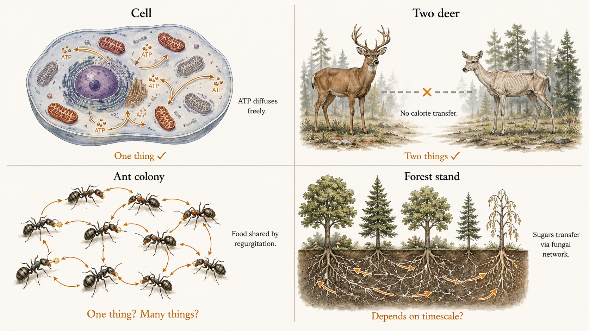
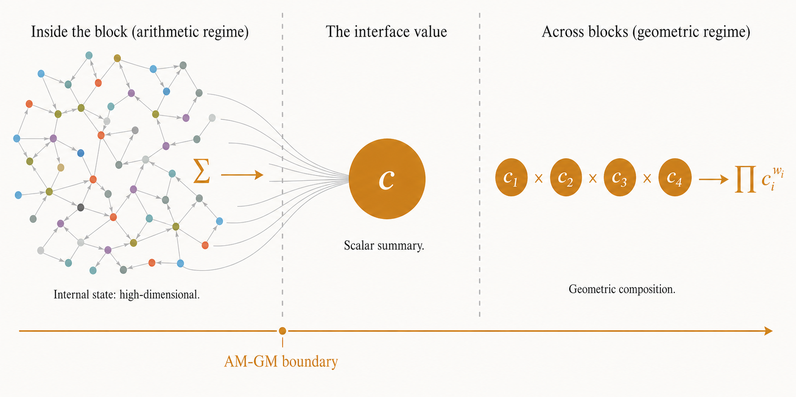
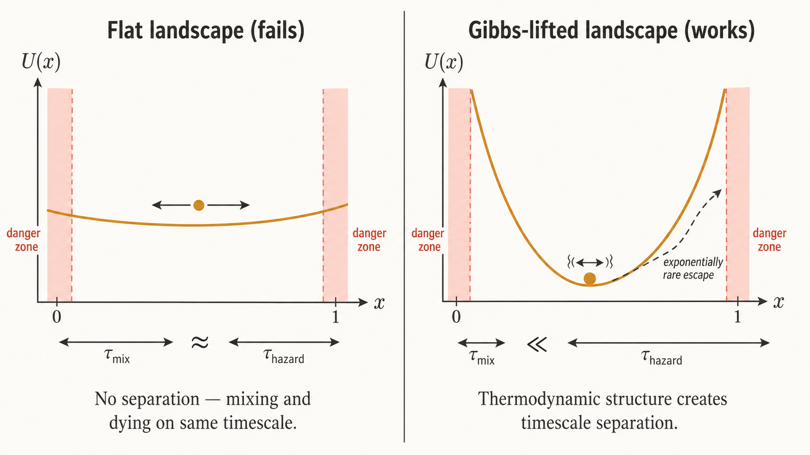
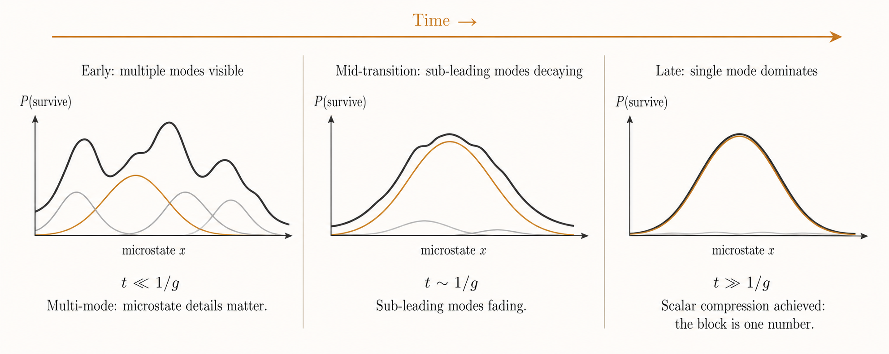

1. Four things that might be one thing
A biological cell gets hit by a toxin that disables a fifth of its mitochondria. It doesn't die. The remaining mitochondria produce ATP, which diffuses through the cytoplasm to wherever it's needed. The cell compensates. It is one thing.
Two deer live in the same forest. One finds abundant food. The other starves. The well-fed deer cannot feed the starving one. They are two things.
An ant colony sends out scouts. Some find food, others don't. Workers regurgitate into the mouths of hungry nestmates. The colony persists even when many individual ants die. Is the colony one thing, or many?
A forest stand of trees is connected by mycorrhizal networks. Trees in shade receive sugars from trees in sunlight through the fungal web. When a pathogen kills one tree, the rest may or may not survive, depending on what the pathogen does to the shared substrate. The stand is — what?

The cell and the deer feel like clear cases. The colony and the forest feel harder. But what exactly distinguishes them? What makes the cell a unified individual, the two deer separate individuals, and the colony and forest intermediate?
The obvious answer — the thing with its own membrane is the individual — is wrong. It fails immediately on the ant colony, which has no membrane. It fails on conjoined twins sharing a circulatory system. It fails on the forest stand. Something else is doing the work.
This post introduces a research program that proposes a specific answer. The answer is mathematical, and it is about transferability over time.
2. Compensation before catastrophe
Here is the claim: a coherent unit is a region within which losses to one part can be compensated by gains to another part before the next viability-relevant event. The boundary of the unit is where this compensation breaks down.
Inside the boundary, resources pool. The cell's ATP diffuses freely; only the total energy budget matters, not which mitochondrion produced it. Outside the boundary, each unit faces its own fate. The two deer each survive or starve independently; the first deer's caloric surplus cannot reach the second.
The critical insight — the thing that separates this from simpler accounts of individuality — is that the boundary is determined by a timescale comparison. It's not enough that resources can transfer between parts. They have to transfer fast enough relative to how often danger arrives.
Consider the ant colony again. Worker ants share food by regurgitation, but this takes time — the food has to pass mouth-to-mouth through a chain of intermediaries. If a sudden cold snap can kill a hungry ant in minutes, but food redistribution takes hours, then on the timescale of cold snaps, the colony is many things. Each ant faces the cold alone. But if starvation takes weeks and food redistribution takes hours, then on the starvation timescale, the colony is one thing. Its food supply is effectively pooled.
Same physical system. Different timescales. Different answers.
This is worth sitting with, because it rules out a lot of candidate theories. The boundary isn't spatial — two deer standing side by side are two units because there's no calorie-transfer mechanism, regardless of proximity. The boundary isn't structural — it depends on dynamics, not topology. And the boundary isn't a modeling choice — it's a fact about the system's dynamics, specifically about whether redistribution completes before the next hazard arrives.1
A toy model makes this concrete. Imagine two compartments connected by a pipe, with a periodic drain that kills any compartment whose level falls below a threshold.
The widget above captures the core intuition. When the pipe is fast relative to hazard arrival, the two compartments equalize before the next drain hits — they survive or fail together, as a single pooled resource. When the pipe is slow, each compartment is on its own. The system crosses a boundary — smoothly but decisively — as you change the ratio of flow rate to hazard frequency.
We call this the AM-GM boundary, for reasons that will become clear in the next section: it is the dynamical location where arithmetic aggregation (pooling resources, taking totals) gives way to geometric aggregation (composing independent survival probabilities). The name comes from the AM-GM inequality, but the object it names is a specific dynamical boundary, not the classical inequality itself.
3. Why geometric? The aggregation switch
Once you're outside the boundary — once each unit is facing its own hazards independently — something mathematically precise happens to the aggregation rule. Survival over repeated rounds becomes multiplicative.
This is easiest to see with a simple example. Suppose you have two independent ventures, each of which survives each round with some probability. After $T$ rounds, each venture's cumulative survival is the product of its per-round survival probabilities:
$$P(\text{survive } T \text{ rounds}) = \prod_{t=1}^{T} p_t$$This is just the chain rule for independent events. Nothing controversial. But it has a non-obvious consequence for how we should evaluate and compare independent ventures: the long-run fate of a multiplicative process is governed by the geometric mean of its per-round factors, not the arithmetic mean.
Why multiplicative composition forces geometric evaluation
Consider an agent that faces $T$ independent rounds, surviving each round $t$ with probability $p_t$. Its cumulative survival is $\prod_t p_t$. Taking logs:
$$\log P(\text{survive all}) = \sum_{t=1}^T \log p_t = T \cdot \frac{1}{T}\sum_t \log p_t$$
The long-run survival rate is controlled by $\frac{1}{T}\sum_t \log p_t$ — the arithmetic mean of the log-survival-rates. Exponentiating recovers the geometric mean $\left(\prod p_t\right)^{1/T}$.
The arithmetic mean $\frac{1}{T}\sum_t p_t$ is irrelevant to long-run survival. A venture that survives with probability 0.99 half the time and 0.01 the other half has an arithmetic mean survival of 0.50 per round, but a geometric mean of $\sqrt{0.99 \times 0.01} \approx 0.10$. It's doomed, despite the reassuring average.
This is the operational content of Peters's ergodicity economics and Kelly's criterion: for multiplicative dynamics, the time average is the geometric mean, and the ensemble average (arithmetic mean) can be arbitrarily misleading.
The same logic applies when we aggregate across independent units at a single time-step, rather than across time-steps for a single unit. If two units face independent hazards and neither can bail the other out, then evaluating their combined viability is a geometric-mean problem, not an arithmetic-mean problem.
But "it's geometric because survival is multiplicative" is only half the story. The deeper result, due to Garrabrant and formalized in the companion monograph, is that the weighted geometric mean is the unique aggregation rule satisfying a small set of compositional axioms. You don't choose it. It's forced.
The five axioms that force the geometric mean (Theorem II.1)
Suppose an outer evaluator $A_w$ acts on positive interface values $(c_1, \ldots, c_n)$ with weights $w = (w_1, \ldots, w_n)$ summing to 1. If $A_w$ satisfies:
(A1) Continuity in $(c_1, \ldots, c_n)$;
(A2) Strict monotonicity in each coordinate;
(A3) Idempotence: $A_w(c, c, \ldots, c) = c$;
(A4) Regrouping invariance: evaluating all-at-once agrees with evaluating in clusters then re-evaluating the cluster summaries;
(A5) Temporal interface sufficiency: if each coordinate's two-segment viability is the product of its one-segment viabilities (i.e. $(\mathbf{c} \circ \mathbf{c}')_i = c_i \cdot c_i'$), then the evaluator on the concatenated profile depends only on the separately-evaluated scalars: $A_w(\mathbf{c} \circ \mathbf{c}') = F_w(A_w(\mathbf{c}), A_w(\mathbf{c}'))$;
then $A_w(c_1, \ldots, c_n) = \prod_i c_i^{w_i}$ — the weighted geometric mean.
Axioms (A1)–(A4) are natural regularity conditions. The axiom that does the real work is (A5): the requirement that the evaluator's scalar output, once produced, is itself admissible as an input for further temporal composition. This is what connects the outer theorem to the interface-value problem.
So the picture is: inside the boundary, pooling works and only totals matter (arithmetic). Outside, each unit's survival composes multiplicatively, and the forced evaluator across units is the weighted geometric mean. The AM-GM boundary is where one gives way to the other.
The connection to expected-log maximization should be visible. Maximizing $E[\ln X]$ — the strategy mandated by the Kelly criterion, by Peters's ergodicity economics, and by Garrabrant's geometric rationality — is maximizing the geometric mean of outcomes. The AM-GM program gives this a structural grounding: you maximize $E[\ln X]$ when you're aggregating across non-transferable branches, and the reason those branches are non-transferable is a dynamical fact about the system — specifically, about where the AM-GM boundary falls.2
4. The interface value: compression at the boundary
The picture so far has two clean edges: arithmetic inside, geometric outside. But the hard problem is at the boundary itself. What, precisely, does the inside hand off to the outside?
The answer is an object called the interface value: a single positive number that summarizes a block's entire internal state, for the purposes of cross-block composition. Think of it as a compression operation. The block's internal state is high-dimensional — which mitochondria are active, how the ATP is distributed, what the current allocation looks like. But for the outside world to aggregate across blocks using the geometric mean, each block has to compress down to a scalar.
The interface value has to satisfy three requirements:
Ratio-scale — comparisons between blocks are ratios, not differences, with zero meaning "dead."
Dynamically produced — the scalar arises from the block's own internal dynamics, not from external labeling.
This is where the program gets technically demanding. Constructing an interface value that satisfies all three requirements — and proving that it does — requires navigating three obstructions that the monograph identifies and resolves in a specific model class. The informal version:
Three obstructions to the interface value
Obstruction 1: Affine vs. ratio-scale. Many natural block summaries (expected payoffs, average resource levels) are affine — they have an arbitrary zero point. The geometric mean requires ratio-scale inputs with a shared zero at "dead." Getting from affine to ratio-scale requires the block's dynamics to have genuine absorbing-failure structure.
Obstruction 2: Timing-sensitive nesting. If the interface value is read at the wrong time — before internal mixing has finished, or after the block has already substantially decayed — it doesn't faithfully represent the block. The scalar has to be read inside a specific temporal window.
Obstruction 3: Post-interface correlations. Even if each block produces a valid scalar, the outer geometric mean requires those scalars to be independent. If blocks share hidden common causes or residual correlations after interface-value extraction, the geometric composition breaks.
The interface value is the conceptual crux of the program. It's the object that makes the boundary well-defined rather than metaphorical. If the interface value exists and is well-behaved, the block is a coherent unit. If it doesn't — if the block's future depends on internal details that can't be absorbed into a single number — the block hasn't cohered. "What is an agent?" becomes "when does the interface value exist?"

5. Why naive models fail (and what fixes them)
The monograph's technical core constructs a specific model class in which the interface value can be exhibited, computed, and verified. The model is a reversible birth-death chain on a fixed-total fiber — think of it as a toy version of "some conserved resource being randomly redistributed among components, with death when any component drops too low."
The first result is a negative one, and it's instructive. In the simplest version — uniform random redistribution with no further structure — the construction fails. The block's internal mixing time and its effective hazard time are the same order of magnitude (both scale as $R^2$ where $R$ is the total resource). There's no temporal window in which the block has equilibrated internally but hasn't yet died. The interface value doesn't exist.

What fixes this is thermodynamic structure — specifically, a Gibbs weight on the internal dynamics that concentrates the stationary distribution away from dangerous configurations. Physically, this corresponds to the system having an energy landscape that strongly favors "safe" internal states — states where the resource is roughly evenly distributed, far from the lethal boundary.
With the Gibbs structure in place, three things happen simultaneously:
The hazard rate becomes exponentially small in the resource level (the system sits in a deep potential well and rarely reaches the dangerous boundary). A spectral compression window opens: there's now a wide temporal range where the block has collapsed onto its principal survival mode but hasn't yet died — exactly the window where a scalar interface value makes sense. And the interface value itself acquires a clean mathematical form: it's the principal eigenvalue of the killed process, with a three-factor decomposition into macroscopic concentration, mesoscopic transport, and microscopic reactivity.3
6. When is something one thing? A measurable criterion
The synthesis delivers a concrete, operationally measurable criterion for when a subsystem counts as a coherent unit. Three conditions, all checkable in principle by spectral and timescale analysis of the subsystem's dynamics:
(ii) A spectral gap large enough that the principal survival mode dominates on the relevant outer timescale — the block genuinely compresses to a scalar.
(iii) Coarse-state dynamics slow enough to respect the compression window — the landscape doesn't shift faster than the block can compress.
When all three hold, the block admits a scalar interface value and the aggregation across non-transferable blocks is forced to be the weighted geometric mean. When any of the three fails, the thing hasn't cohered on that timescale, and the AM-GM composition isn't licensed.
Return to the opening examples. The cell: its metabolic network has strong homeostatic regulation (metastable well), ATP equilibration is fast relative to acute toxin exposure (spectral compression), and the metabolic landscape doesn't shift faster than equilibration (timescale ordering). The framework predicts: one thing. The two deer: there is no resource-transfer mechanism between them, so there's no internal fiber to mix on, no well structure, no spectral gap. The framework predicts: two things. The ant colony: food sharing via regurgitation creates a resource-mixing mechanism, but whether the three conditions hold depends on the timescale. On the starvation timescale (weeks), food redistribution is probably fast enough — prediction: one thing. On the freezing timescale (minutes), individual ants can't share body heat fast enough — prediction: many things.
These are not yet verified empirical claims. They are structural predictions that the framework makes, and they are the kind of thing that could in principle be measured. The monograph is honest about this: the bridge from the mathematical realization to real biological and agentic systems is the program's open frontier.

7. Where the two sides meet
There's a satisfying structural observation that unifies the two sides. In the model class where the synthesis works, the outer geometric aggregation — when you take logs — becomes arithmetic:
$$\log V_\Delta = \sum_i w_i \log c_i(\Delta) \approx -\Delta \sum_i w_i \, a_1^{(i)}$$On the left: the log of the geometric mean, which is the outer evaluator. On the right: a weighted sum of decay rates — arithmetic in the log-survival coordinate.
So the AM-GM boundary is not a boundary between incommensurate aggregation rules. It's a boundary in a single additive coordinate where what's being summed changes. Inside the block, we sum resources. At the interface, we sum log-decay-rates. Across blocks, the sum is weighted by external scheduling. One additive structure, three levels of abstraction.
Under slow-fast dynamics — where the block's environment itself changes over time — the log-rate generalizes to the log of a Feynman-Kac expectation, which accounts for the stochastic path of the environment. The synthesis survives this generalization, but only in certain dynamical regimes (quasi-static and fast-mixing), with explicit characterization of where it breaks and what replaces it.
8. Connections and what remains
The AM-GM program sits at the intersection of several existing research programs, drawing from each and connecting them:
Garrabrant's geometric rationality identified the weighted geometric mean as the unique compositional aggregation rule across non-transferable branches. The AM-GM program takes this as a characterization of the outer edge and adds the inner edge, the interface value, and the dynamical theory of when the boundary exists. Geometric rationality tells you what to do once the branches are specified; the AM-GM program tries to tell you what counts as a branch.
Peters's ergodicity economics explains why $E[\ln(\cdot)]$ is the right objective for systems facing multiplicative dynamics. The AM-GM program grounds this in subsystem structure: you maximize $E[\ln(\cdot)]$ because you're aggregating across non-transferable branches, and the log-rate coordinate is where inner and outer aggregation meet.
Friston's Free Energy Principle identifies systems by Markov blankets — conditional-independence boundaries between internal and external states. The AM-GM boundary is a different kind of boundary: it's about resource transferability, not information flow. A cell, an ant colony, and a rock all have Markov blankets in some sense. The AM-GM boundary asks which of those blankets correspond to coherent units for viability accounting.
What remains. The monograph is a proof-of-concept in a specific model class — reversible killed birth-death processes with Gibbs-lifted fiber dynamics. The four situations that opened this post are not yet resolved by this work. Whether real biological systems exhibit the three-part spectral structure the synthesis requires — whether cells, colonies, and forest stands satisfy the conditions on their viability timescales — is an empirical question the theory opens but does not answer. The theory tells you what to measure. Whether the measurements come out the way the theory predicts is the open frontier.
1. This is where the AM-GM program parts ways with Markov blanket–based individuality criteria (as in the Free Energy Principle). Markov blankets are defined by conditional independence — an information-theoretic property. The AM-GM boundary is defined by resource-transfer dynamics — a thermodynamic property. A system can have a well-defined Markov blanket and still not be a coherent unit in the AM-GM sense, if its internal resource mixing is too slow relative to hazard arrival. ↩
2. This also connects to the units-of-selection debate in evolutionary biology. A group counts as a "unit of selection" on a given generational timescale if its aggregate viability has interface structure on that timescale. The AM-GM program gives this informal criterion a specific mathematical operationalization. ↩
3. Some of the spectral results in the monograph carry "formal" status — rigorous modulo specific offstage dependencies (notably a metastable-capacity asymptotic from the Bovier-style literature) that the monograph uses but does not independently derive. The monograph is explicit about which results are fully rigorous and which are formal in this sense. ↩